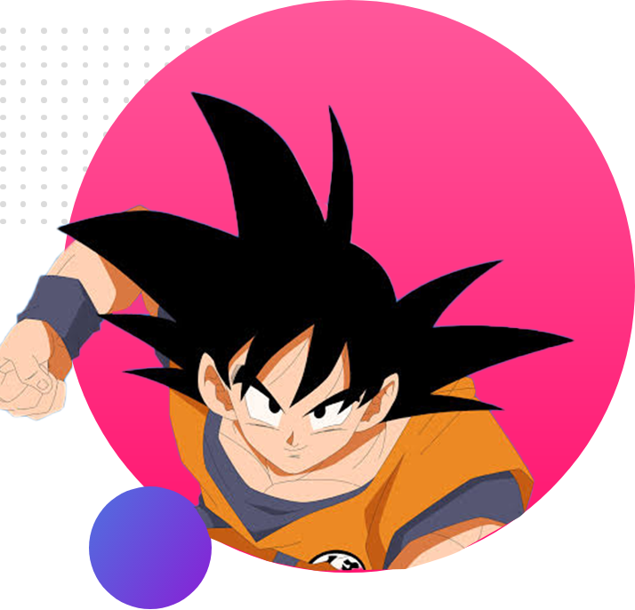
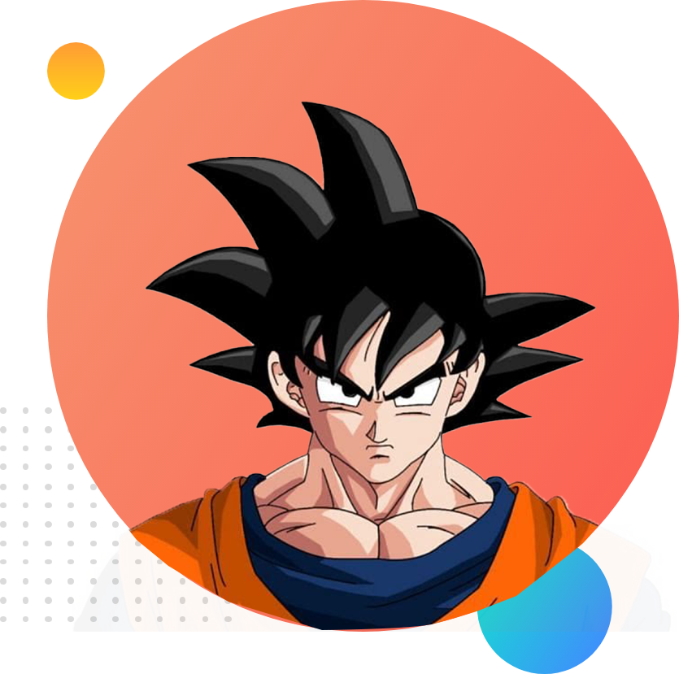

Goku, and Dragon Ball in general, evolved from one of Akira Toriyama's earlier one-shot series called Dragon Boy. In this story, the protagonist looks a lot like Goku, but has a pair of wings.[4] The original inspiration was Hong Kong martial arts films, including Bruce Lee films such as Enter the Dragon (1973) and Jackie Chan films such as Drunken Master (1978);[5][6] Toriyama said he had a young Jackie Chan in mind for a live-action Goku, stating that "nobody could play Goku but him."[7]
Contact Me

A number of notable public figures have commented on their feelings towards Goku or his status in popular culture. For example, Jackie Chan has gone on record stating that Goku is his favorite Dragon Ball character.[100] The German rock band Son Goku takes their name from the Dragon Ball protagonist. The band's lead singer Thomas D chose the name because Goku embodies the band's philosophy, saying he was "fascinated by Goku's naïveté and cheerfulness,
Watch NowIn the anime-only sequel series, Dragon Ball GT, Goku is transformed back into a child by an accidental wish made by his old enemy Pilaf using the Black Star Dragon Balls while Pilaf was about to wish to taket, where he watches a battle between Goku Jr., his descendant, and Vegeta Jr., Vegeta's descendant. An elderly Pan sees him, but he quickly departs.
Goku has appeared in various other media including an unofficial Taiwanese live-action film[57] and an unofficial Korean live-action film.[58] He was portrayed by Justin Chatwin in the 2009 20th e in avatar form in the MMORPG Second Life for a Jump Festa promotion titled Jumpland@Second Life.[61] Goku also appears in the Dr. Slump and Arale-chan video game for the Nintendo DS.[62]